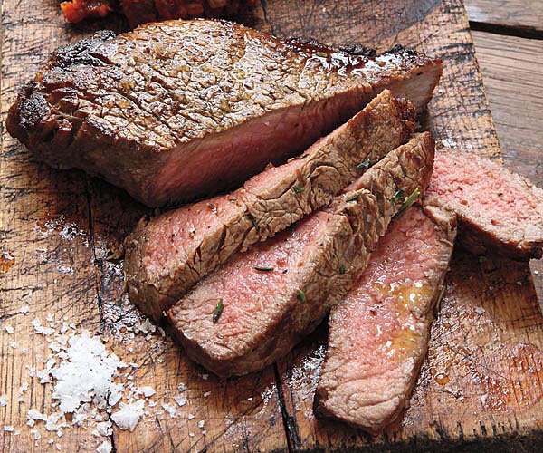

how to cook a steak on a cast iron pan
Ingredients!

- Steak
- Garlic
- Thyme
- Butter
- Jalapeño
Steps!
- 1.Gathering ingredients
- 2.Put cast iron pan on the stove, a little oil in the pan
- 3.Turn the stove on medium-high, and once the pan gets hot. cut Jalapeño up while it gets hot
- 4.Place the fat cap down first(if there is one on your cut of meat), Put the steak down on one side and cook it until you get a nice crust.
- 5.Flip it over and cook it until your desired temperature
- 6.Turn it off halfway through cooking the second side, throw in the butter and garlic
- 7.After a minute of cooling it off: throw in Jalapeños and thyme
- 8.Baste your stake constantly on both sides
- 9.set out to rest for 5 minutes or so on cutting board
Allergy Information
- Steak
- Garlic
- Thyme
- Butter
- Jalapeño
- Vegetarians and Vegans